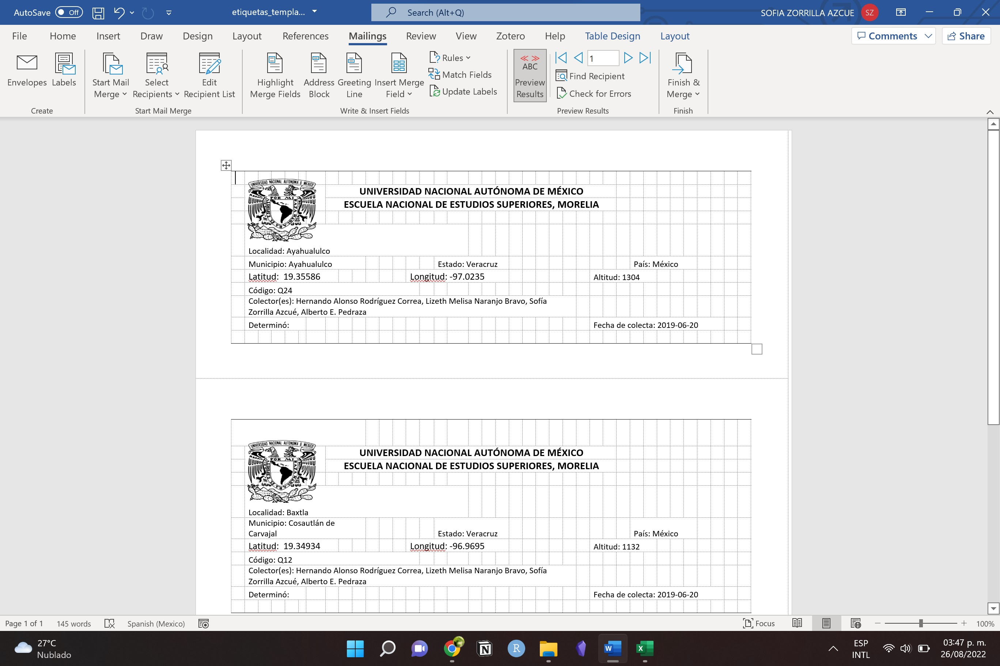
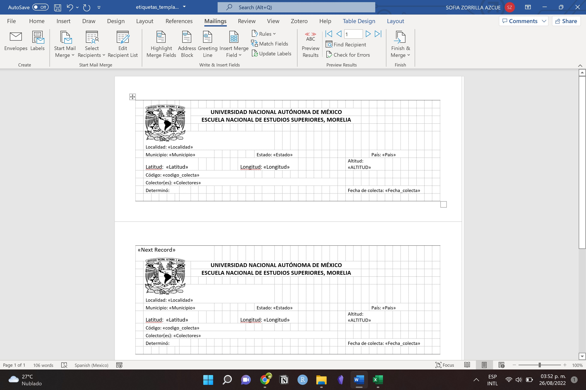
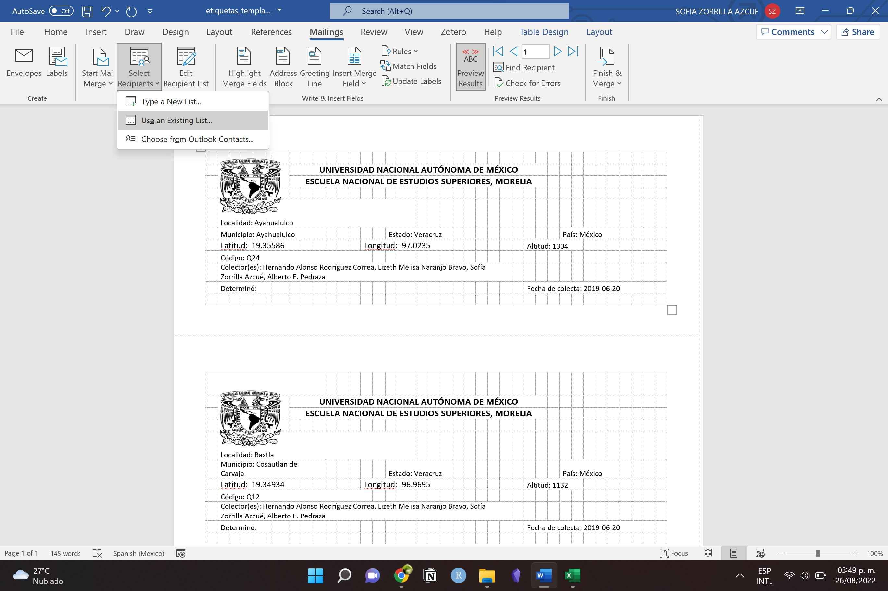
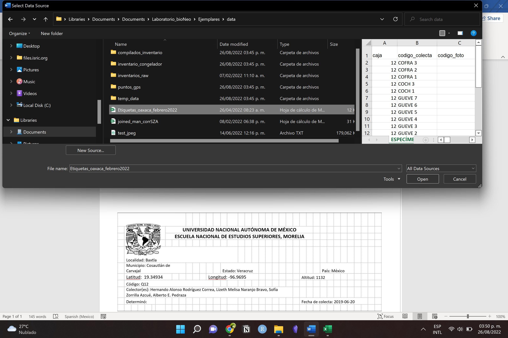
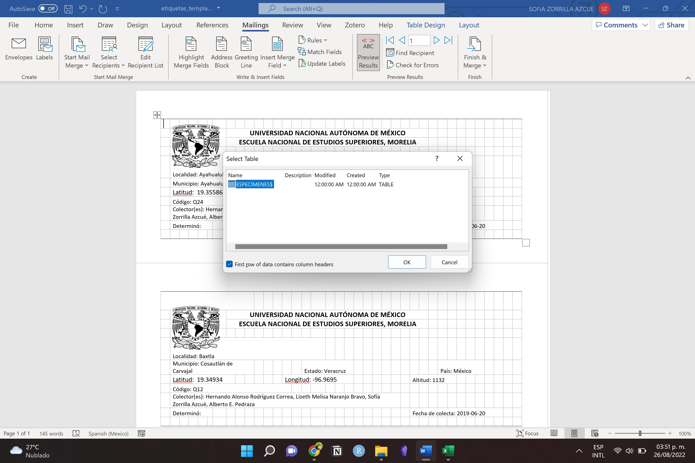
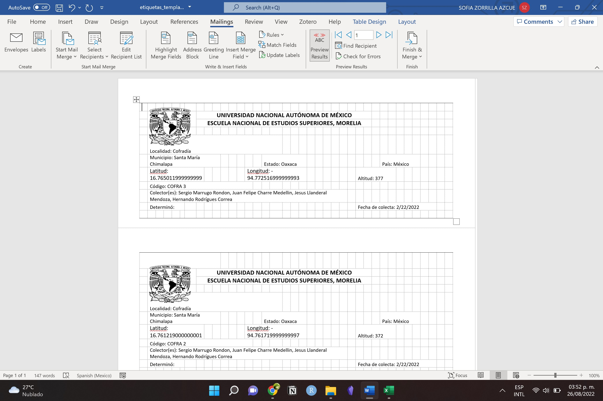

Almacenamiento de datos
Ideas
- Procesamiento y almacenamiento de ejemplares
- Metadatos en base de datos de ejemplares
- Cómo generar etiquetas de ejemplares
- Plantillas
- Automatización
- Registro fotográfico de actividades en campo
Base de datos de ejemplares
- ¿Qué es una base de datos relacional?
- Reglas básicas de una base de datos
- Qué define una tabla
- Llaves primarias y secundarias
- Relaciones entre tablas
- Glosario
Diseño
La base de datos de ejemplares del laboratorio se compone de 14 tablas. En la siguiente tabla encontrarás una descripción de la información que se almacena en cada una, su unidad básica y sus claves primarias y secundarias.
| Tabla | Descripción | Clave primaria (PK) | Clave secundaria (FK) |
|---|---|---|---|
| individuos | Almacena información a nivel de individuos. Es decir su ubicación geográfica (y precisión correspondiente), id del tipo de vegetación, id de la especie, fecha de colecta y comentarios u observaciones de campo | id_individuo | id_estado id_municipio id_pais id_especie id_veg = id de tipo de vegetación |
| ejemplares | Almacena información a nivel del ejemplar (i.e. dónde se encuentra físicamente, fecha de captura en la base de datos, de qué individuo proviene) | id_ejemplar | id_individuo |
| fotos_ejemplares | Relaciona el código de los ejemplares con el id de las fotos. La posición se refiere a si la foto es principalmente del haz o del revés del ejemplar | id_ejemplar posición | |
| colectores | Catálogo de nombres de colectores. A cada uno se le asigna un ID compuesto de 3 iniciales mayúsculas. | id_colector | |
| ejemplares_colectores | Relaciona el código de los colectores con los ejemplares que han colectado | id_colector id_ejemplar | |
| taxonomia | Catálogo de especies con su respectiva información taxonómica (familia, género, autoridad taxonómica, presencia en la filogenia) | id_especie | |
| paises | Catálogo de paises | id_pais | |
| estados | Catálogo de estados o departamentos. | id_estado | |
| municipios | Catálogo de municipios. | id_municipio | |
| estados_municipios | Relación entre municipios y estados. Esta tabla es importante porque hay municipios con el mismo nombre en distintos estados. | id_estado id_municipio | |
| tipos_vegetación | Catálogo de tipos de vegetación | id_veg | |
| flags | Código para casos de identificación faltante. Por ejemplo falta de coordenadas = 1. Los flags tienen distinto nivel de gravedad. | id_flag | |
| flags_ejemplares | Relación entre ejemplares y flags. A un mismo ejemplar le puede hacer falta diferente información, por lo tanto puede tener más de un flag. | id_flag id_ejemplar | |
| muestras_genética | Relaciona la información de los individuos con las muestras que están guardadas en el congelador. Además indica en qué lugar físico están guardadas las muestras y si son hojas enteras o molidas. | id_muestra | id_individuo |
Las tablas se relacionan unas con otras de la siguiente manera:

Para acceder a la información se deben realizar los siguientes pasos:
SQL
- Conectarse a la base de datos con su usuario y contraseña. Se pueden usar diferentes clientes de bases de datos. La recomendación es usar DBeaver.
- Abrir una consola de SQL y escribir los comandos que se vayan a utilzar.
Algunos ejemplos de comandos comunes son los siguientes (más información sobre SQL)
Seleccionar todas las columnas (*) de una tabla.
SELECT * FROM <nombre_tabla>Seleccionar las columnas id_individuo y id_ejemplar de la tabla de individuos
SELECT id_individuo, id_ejemplar FROM individuosFiltros. Por ejemplo selecciona los individuos que se encuentren en altitudes mayores a 1000 m.
SELECT id_individuo FROM individuos
WHERE altitud > 1000Unir tablas (por ejemplo la tabla de individuos con la de taxonomía para saber de qué especie es cada individuo). El comando se lee de la siguiente manera “selecciona las columnas id_individuo id_genero y epiteto_especifico de la tabla de individuos a la que se le une la tabla de taxonomía. La unión se realiza usando como índice la columna id_especie de las tablas individuo y taxonomía”. En este caso, en el comando de SELECT es importante indicar de qué tabla estamos tomando las columnas. Eso se hace poniendo el nombre de la tabla seguido de un punto y el nombre de la columna.
SELECT individuos.id_individuo,
taxonomia.genero,
taxonomia.epiteto_especifico,
FROM individuos
LEFT JOIN taxonomia
ON individuos.id_especie = taxonomia.id_especieR
Los datos se pueden leer de la base de datos y usar en R como cualquier tabla. Para hacerlo hay que escribir una búsqueda de SQL y mandarla a través del paquete “RMariaDB”. Las búsquedas de SQL pueden llamar las tablas completas para posteriormente ser manipuladas completamente en R o pueden incluir uniones, filtros y otras modificaciones. A continuación pongo un ejemplo para llamar la tabla completa de individoos.
library("RMariaDB")
# Primero hay que generar un objeto con los parámetros de la conexión a la base de datos (nombre de usuario, nombre de la base de datos, contraseña, etc)
conn <- dbConnect(
drv = RMariaDB::MariaDB(),
username = "username",
password = "password",
host = "Dirección IP",
port = 3306,
dbname = "ejemplares"
)
# Posteriormente se manda la búsqueda en sql
query <- dbSendQuery("SELECT * FROM individuos")
# Le pedimos que ejecute la búsqueda y que guarde el resultado en un objeto
individuos <- dbFetch(query)
# Listo, nuestra tabla de individuos en la base de datos va a estar guardada como dataframe en un objeto de RAprendizajes
En esta sección el objetivo es describir los principales errores que cometimos para tratar de generar estrategias para minimizarlos y evitar que sigan sucediendo.
| Error | Descripción | Consecuencias |
|---|---|---|
| Falta de estandarización | En cada salida de campo se asignó un sistema de codificación de ejemplares. | - Pérdida de información - Gran dificultad para revisar la información - Muchos errores a la hora de transcribir |
| Falta de estandarización | Mucha variabilidad en la forma que se capturaban los datos de los registros. | - No se puede automatizar - Errores de transcripción |
| Falta de información | La información faltante más grave es la falta de coordenadas. Sin embargo faltó registrar fechas de colecta, localidades, precisión de las coordenadas, colectores, etc. en muchos casos. | - Registros incompletos |
| Falta de mantenimiento constante de la información | Durante mucho tiempo la información se quedó sin centralizar y los ejemplares sin resguardar. | - Información incompleta o dispersa guardada con distintos sistemas - Desgaste de los ejemplares - Olvidamos los sistemas de codificación utilizados - Los volúmenes tan grandes de información son difíciles de verificar |
Crear las etiquetas de todos los ejemplares con Word y una tabla de datos.
En el repositorio de ejemplares (o el folder en la computadora del laboratorio), hay un template para hacer las etiquetas de todos los ejemplares utilizando una tabla de excel como archivo de entrada. A continuación se describe el proceso para hacerlo:
- Abrir el formato en la computadora en la que tiene la tabla de excel con los datos de las etiquetas. Seleccionar la pestaña de Word de
Mailings.

Cada renglón de la tabla de excel va a corresponder a una etiqueta.Las columnas tienen que estar nombradas con las palabras que aparecen entre << >> en la siguiente imagen. A través de esos encabezados es que word puede reemplazar la información en cada etiqueta.

- En la pestaña de
Select RecipientsseleccionarUse an exsisting list.

- Seleccionar el archivo con la tabla de excel.


- ¡Listo! la información será llenada para cada etiqueta. Si quieres revisar los resultados puedes seleccionar la pestaña de
Preview resultsy moverte entre hojas de etiquetas con las flechas que están a la derecha. Una vez que estés listo puedes mandar a imprimir o guardar el archivo de etiquetas completo utilizando la opción deFinish & Merge(imprimir o editar cada documento individualmente)
